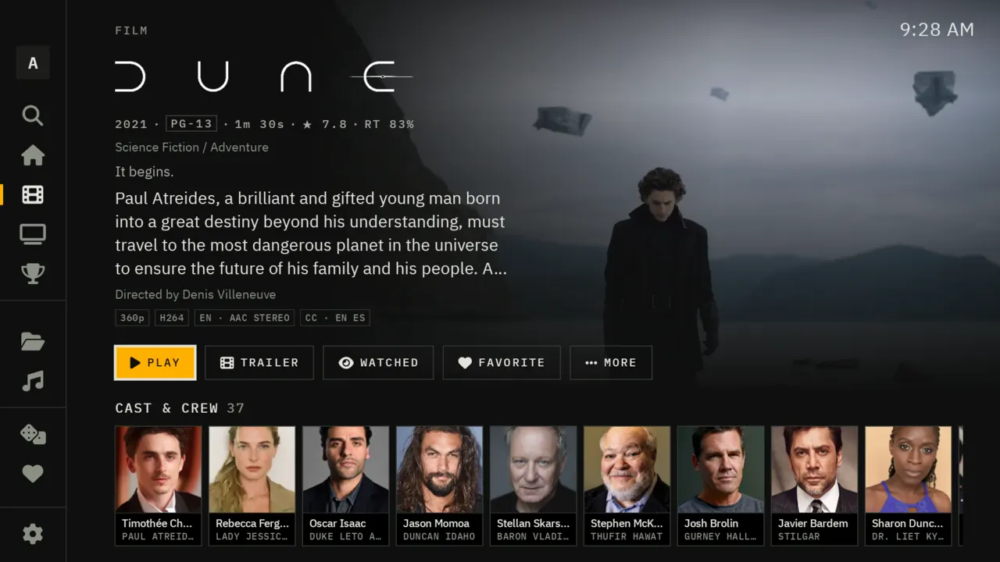
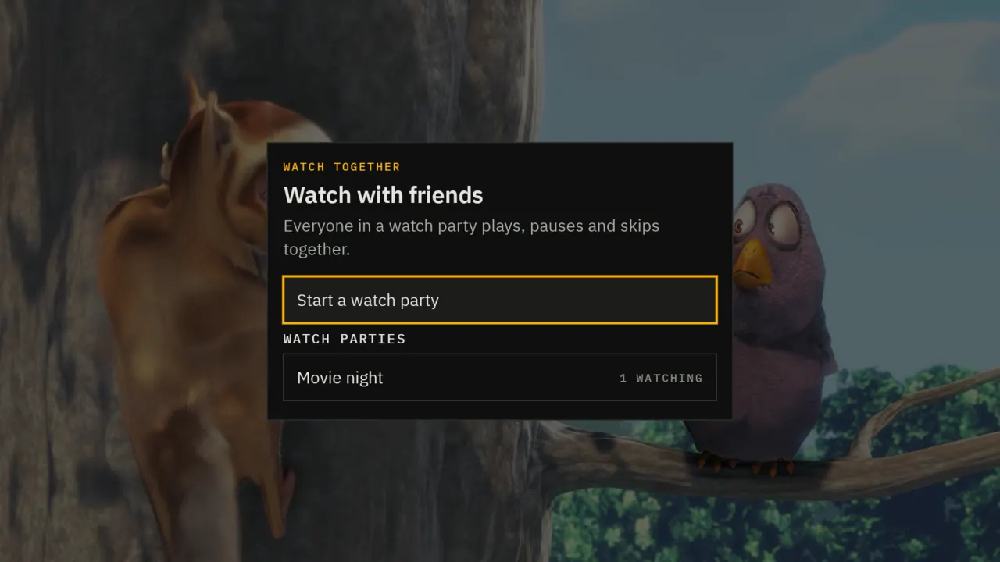
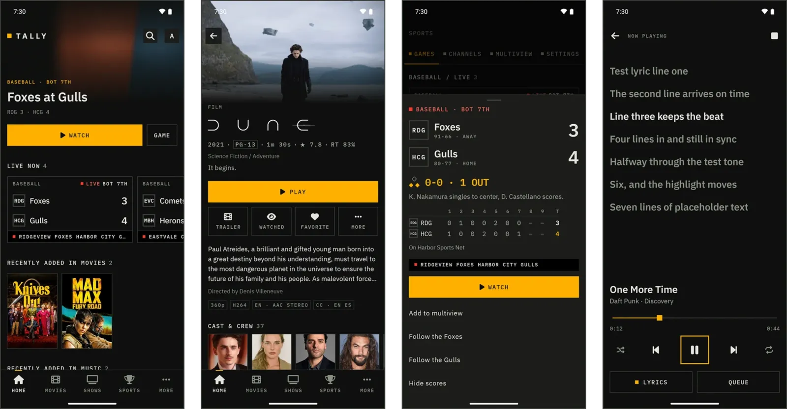
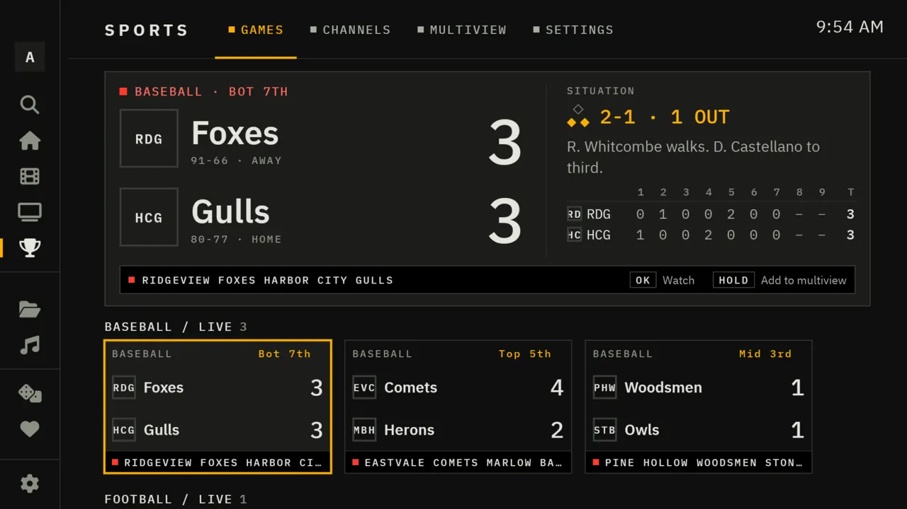

A Jellyfin app for TVs and phones
Your library. Tonight's games. One calm screen.
Tally plays your Jellyfin films, shows and music in a quiet, type-led design. Add its server plugin and the live TV you already have becomes a games board with live scores, a score bug, box scores, multiview and Tally Pulse.


A Jellyfin app first. A sports broadcast when there's a game on.
Your films, shows and music
Tally connects to your Jellyfin server and plays nearly anything Jellyfin can serve: direct play when your device can, a transcode when it can't. Film pages, season rundowns, album pages and synced lyrics, in a design that stays out of the way.
Tonight's games, properly
With the Tally plugin, your server knows what's being played today and which of your channels carries it. You get a games board, a score bug, box scores, a game switcher, multiview, recordings and Tally Pulse.
Your server, your sources
Tally provides no channels. Live video comes from sources you already have: a paid IPTV service, an HDHomeRun or antenna, your own M3U or HLS streams. Tally makes them feel like one clean broadcast.
Why it's called Tally
A tally light is the small lamp on top of a studio camera. When it's lit, that camera is on air. Tally borrows the whole feel of a control room: a dark screen, square edges, clear type, and a single amber light for whatever has your attention, the thing you've selected or the game that's live right now. When the app starts, its light sputters for a moment and catches once your server answers.
On the TV, the phone and the browser you already use.
Everything, in running order.
Eight things Tally does, playing on the monitor. Pick one, or let it run.





With the Tally server plugin
The games board your channels were missing.
The plugin reads a public scoreboard feed and matches every game to the channel that carries it: by the channel's name, by what its guide says is on, or by the network. Your channel list turns into a scoreboard where every card is a play button.

- A score that rollsBig, readable from the sofa, and it turns over when a team scores.
- The situationCount, outs and runners. Down, distance and the ball on. Clock and period.
- Box score and last playInning by inning, quarter by quarter, and what just happened.
- Hottest firstLate, close games rise to the top. Follow a team and its games come first.
The score bug, through a night of games
Your sources, your rights
Tally doesn't provide channels or streams, and doesn't point you to any. The video comes from live TV you already have the rights to watch: a paid IPTV service, an HDHomeRun or antenna, or your own M3U playlists and HLS streams. Tally only adds the scores and the way it all looks.
Your server does the work.
The Tally plugin runs inside your Jellyfin server. It turns your sources into channels with a guide, picks the best stream for each game, follows the scores and hands every screen the same picture. The apps just play.
On air in three steps.
Someone else runs your server? Skip to step three: you only need the app, the server's address and your Jellyfin account.
Add the plugin to Jellyfin
A Windows setup, a Docker Compose file, a one-line Linux script, or Tally's repository in Jellyfin's plugin catalog. About five minutes, and it updates through Jellyfin from then on.
Server setupPoint it at your live TV
Add your IPTV service's M3U playlist and XMLTV guide, your HDHomeRun's lineup, or your own HLS streams. Optional: without live TV, Tally is still a complete Jellyfin app.
Which sources workInstall Tally on your screens
Downloader on Android TV and Fire TV, a tap on a phone, an installer for Samsung and LG. Sign in with a 6-digit code from your phone, and nobody types a password with a remote.
DownloadFree, and it stays free.
No ads, no subscription, no account with anyone but your own server. If Tally has become part of your evenings and you're able to chip in, Patreon pays for the time that goes into it.
Patreon
Support funds new features, testing across Jellyfin versions and TVs, and keeping Tally in step with Wholphin and Jellyfin releases.
Before you ask.
Does Tally come with channels or sports streams?
No. Tally is a Jellyfin app. Live video comes from sources you already have the rights to watch: a paid IPTV service, an HDHomeRun or antenna, your own M3U or HLS streams. The plugin adds scores and game information from a public scoreboard feed and matches them to your channels.
Do I need my own Jellyfin server?
You need access to one: yours, or a friend's who gives you an account. Tally plays everything Jellyfin serves. The Sports section, Samsung and LG TVs, and the Tally look for Jellyfin web need the Tally plugin on that server.
Does it replace the official Jellyfin app?
It installs alongside it, and alongside Wholphin, and changes neither. Your server, your accounts and your watch history are the same in every app.
Is there an iPhone, Apple TV or Roku version?
Not yet. The official Jellyfin apps work on those devices as usual, and with the plugin they still get Tally's live channels, guide and game cards through Jellyfin's own Live TV.